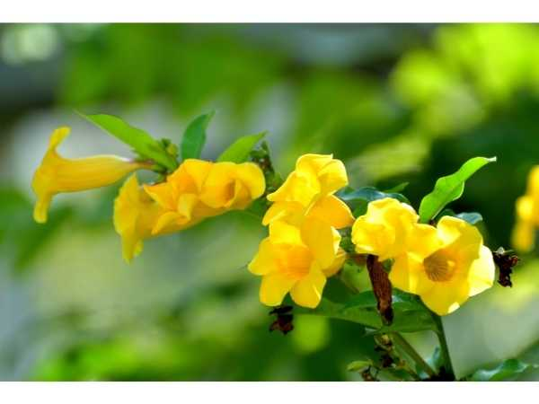

Allamanda cathartica
Common Names: Golden Trumpet, Yellow Allamanda, Butter Cup Vine, Yellow Bell
Local Name: Allamanda (Tamil/English), Sona Champa (Hindi)
Family: Apocynaceae
Origin: Brazil and tropical South America
Plant Type: Perennial evergreen shrub or scrambling vine
Variety: Yellow-flowered species; 'Hendersonii' and 'Grandiflora' are popular cultivars
Average Lifespan: 10–20+ years
| Growth Habit | Vigorous evergreen shrub or scrambling climber; can be trained as hedge or vine |
| Plant Size | 2–5 meters as shrub; up to 10 meters as climber |
| Leaves | Whorled, 3–4 per node; elliptic to obovate; 8–15 cm long; glossy dark green; leathery |
| Flowers | Large trumpet-shaped, 5–7 cm across; bright golden yellow; 5 overlapping petals; fragrant |
| Flower Characteristics | Blooms nearly year-round in tropics; flowers in terminal clusters; milky latex in stems; all parts toxic |
| Root System | Moderately deep fibrous root system; drought-tolerant once established |
| Climate | Tropical and subtropical; thrives in warm, humid conditions |
| Temperature Range | 18–35°C; frost-sensitive; damaged below 10°C |
| Rainfall Requirement | 800–1500 mm; moderate moisture; tolerates brief drought |
| Soil Type | Well-drained fertile loam; tolerates sandy soils with organic amendment |
| Soil pH Preference | 5.5–7.0 |
| Sun Requirement | Full sun (6+ hours); blooms best in full sun |
| Spacing | 1.5–3 meters apart for hedge; 3–5 meters for climber |
| Irrigation Method | Regular watering; drip or basin; reduce in cooler months |
| Water Requirement | Moderate; drought-tolerant once established |
| Can it Grow in Pots? | Yes, in large pots (30–50 liters); prune to maintain size |
| Fertilizer Schedule | Monthly during growing season; high-phosphorus fertilizer promotes flowering |
| Recommended Organic Fertilizers | Compost, vermicompost, bone meal, neem cake |
| Pesticide Frequency | As needed; monitor for caterpillars and scale |
| Recommended Organic Pesticides | Neem oil for scale and mealybugs; hand-pick caterpillars |
| Mulching Practice | Organic mulch around base to retain moisture and regulate temperature |
| Training System | Train on trellis or fence for climbing; prune as hedge or standard shrub |
| Pruning Time | After main flowering flush; late winter or early spring |
| How to Prune | Cut back by one-third to one-half; wear gloves (latex is irritating); promotes new flowering growth |
| Common Pests | Caterpillars (Allamanda caterpillar), scale insects, mealybugs, whitefly |
| Common Diseases | Leaf spot, root rot in waterlogged soils, sooty mold (from scale) |
| Disease Prevention & Remedies | Good drainage; remove infected leaves; neem oil for fungal and pest issues |
| Flowering Months | Year-round in tropics; peak March–October |
| Pollination Type | Insect-pollinated (bees, butterflies) |
| Pollination Notes | Rarely sets fruit in cultivation; grown primarily for flowers |
| Pollination Details | Insect-pollinated; rarely sets seed in cultivation |
| Propagation by Seeds | Rarely used; seeds not commonly available |
| Propagation by Cuttings | Semi-hardwood cuttings root easily; preferred method; use rooting hormone; wear gloves |
| Propagation by Grafting | Not commonly practiced |
| Water Usage | Moderate; drought-tolerant once established |
| Soil Conservation Practices | Dense growth provides good ground cover and erosion control on slopes |
| Organic Practices Used | Compost-based feeding; minimal chemical inputs |
| Companion Plants | Grows well with other tropical shrubs; good backdrop for lower-growing plants |
| Biodiversity Benefits | Attracts butterflies and bees; provides nectar source |
| Symbolism | Symbol of tropical abundance; widely used in tropical landscaping worldwide |
| Traditional Uses | Latex used in traditional medicine as purgative (cathartica = purging); toxic — not for self-medication |
Add your field observations here.